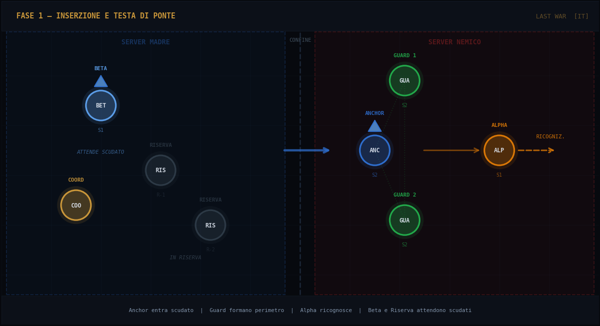
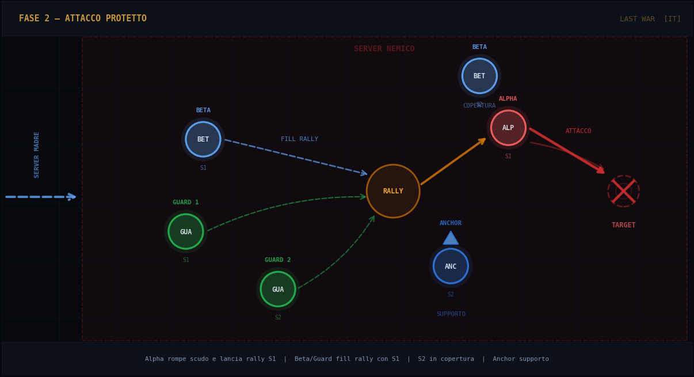
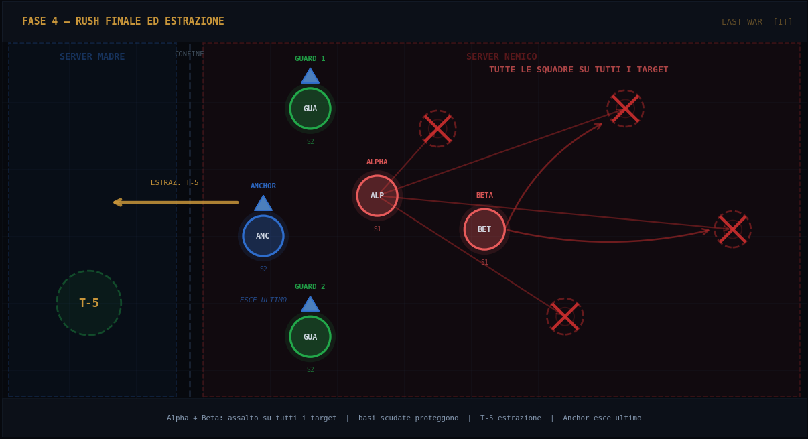

Inserzione · Attacco · Rally · Estrazione
Il giorno VS Enemy Buster rappresenta una finestra tattica nella quale l'alleanza avversaria è vulnerabile e i punti sono amplificati. L'obiettivo non è portare tutti sul fronte, ma massimizzare il risultato con il minimo rischio, coordinando un gruppo ristretto con ruoli precisi e tempistiche rigide.
Chi non partecipa all'operazione deve alzare lo scudo da 24 ore non prima di mezzanotte del venerdì. La finestra ottimale è alle 3:00 del mattino di sabato per garantire copertura totale per tutta la durata dell'evento.
| Termine del Gioco | Equivalente Tecnico | Funzione in Strategia |
|---|---|---|
| Garrison | Guarnigione / Presidio Difensivo | Squadre parcheggiate su base amica per difesa attiva o copertura |
| Fill Rally | Riempimento del Rally | Portare truppe nel rally lanciato da Alpha per massimizzarne la potenza |
| Scout | Ricognizione | Azione esplorativa per identificare il bersaglio prima dell'attacco |
| Shield | Scudo / Protezione Base | Protezione che rende la base non attaccabile; fondamentale per Guard e Anchor |
| Rush Finale | Assalto Rapido Conclusivo | Ondata offensiva massiccia negli ultimi minuti con tutte le squadre disponibili |
| Anchor | Base di Ancoraggio Avanzata e Riserva | Base scudata sul territorio nemico: punto sicuro di raccolta e supporto |
Alpha: attacchi diretti e lancio del rally
Beta, Guard 1, Guard 2, Anchor: fill del rally di Alpha
HQ 20–22: solo su base Anchor scudata in garrison
Beta, Guard 1, Guard 2: coprono Alpha in protezione
Anchor: riserva nelle mura o supporto al rally
HQ 20–22: sempre su base protetta, mai esposta autonomamente
Alpha e Beta: attacchi finali nel Rush (Fase 4) su tutti i target
Guard/Anchor: protezione massima ad Alpha e Beta nell'assalto finale
Usarla solo in Fase 4 — non sprecarla nelle fasi precedenti

Costruire una presenza sicura sul territorio nemico. Lo scopo non è "entrare tutti insieme", ma creare una base operativa protetta dalla quale coordinarsi prima di attaccare.
Alpha, Beta e Riserve sono gli HQ più potenti. Anchor ha almeno media potenza. Guard 1 e Guard 2 sono i più deboli e operano sempre con scudo. La gerarchia dei rischi è netta: i più forti si espongono, i più deboli rimangono protetti.

Alpha colpisce il bersaglio principale con la Squadra 1 mentre il resto del team mantiene la copertura, riempie il rally e garantisce la sopravvivenza dell'operazione anche in caso di contrattacco.
Dopo il primo ingaggio rivalutare la situazione tattica. Cambiare bersagli se necessario, attivare la Riserva solo quando serve davvero, aprire il rally solo con uomini e squadre già pronti a sostenerlo. La disciplina fa la differenza in questa fase.
Se Alpha deve rientrare nel server madre, sceglie un punto lontano dall'alveare per il raffreddamento. Successivamente indossa lo scudo, rientra nel server nemico tramite il Portale VS in posizione protetta e si allinea — sempre con scudo alzato — vicino alle basi amiche.

Massimizzare i punti residui usando tutte le squadre di Alpha e Beta in attacchi diretti, mentre le basi scudate forniscono protezione massima. La chiusura è parte della strategia: il rientro coordinato e la riattivazione degli scudi valgono quanto gli ultimi attacchi.
La strategia Enemy Buster Semplificata è progettata per massimizzare l'efficacia offensiva con un numero ridotto di giocatori. La chiave è la disciplina: ogni ruolo ha una funzione precisa, ogni fase ha un obiettivo chiaro. L'uscita controllata vale quanto l'entrata. Chi rispetta i propri compiti porta punti all'alleanza senza diventare un bersaglio.
Entrate in ordine. Attaccate con disciplina. Ritiratevi in tempo. Il Coordinatore ha sempre l'ultima parola su tempistica e ordine di estrazione. Nessun giocatore rompe lo scudo senza conferma del ruolo. Nessun rally parte senza fill minimo garantito. La vittoria appartiene a chi sa anche quando fermarsi.
| Fase | Operazione | Azioni Chiave | Stato Scudo |
|---|---|---|---|
| FASE 1 — INSERZIONE | Testa di ponte | Anchor entra → Guard si posizionano → Alpha scout → Beta attende | Tutti con scudo |
| FASE 2 — ATTACCO | Primo contatto | Alpha attacca S1 + rally → Beta, Guard coprono S2 + fill rally | Solo Alpha senza scudo |
| FASE 3 — MANOVRA | Rally e pressione | Coordinatore valuta → Riserva solo se serve → Rally con fill confermato | Coordinamento attivo |
| FASE 4 — RUSH | Estrazione | Alpha + Beta tutte le squadre → T−5 estrazione → Anchor esce ultimo | Scudo al rientro |